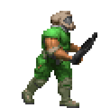

"What source port(s) do you use?"
~~~ I mainly use Nugget Doom as my main DOOM source port. I also use
UZDoom for mods that do not work with Nugget Doom.
"DOOM I or DOOM II?"
~~~ I like both of them, but for different reasons. I like DOOM I for its map design, and general vibe.
I like DOOM II for its more advanced engine limitations over DOOM I, the SSG, and the Chainsaw.
~~~ I actually do! Here it is! :D
